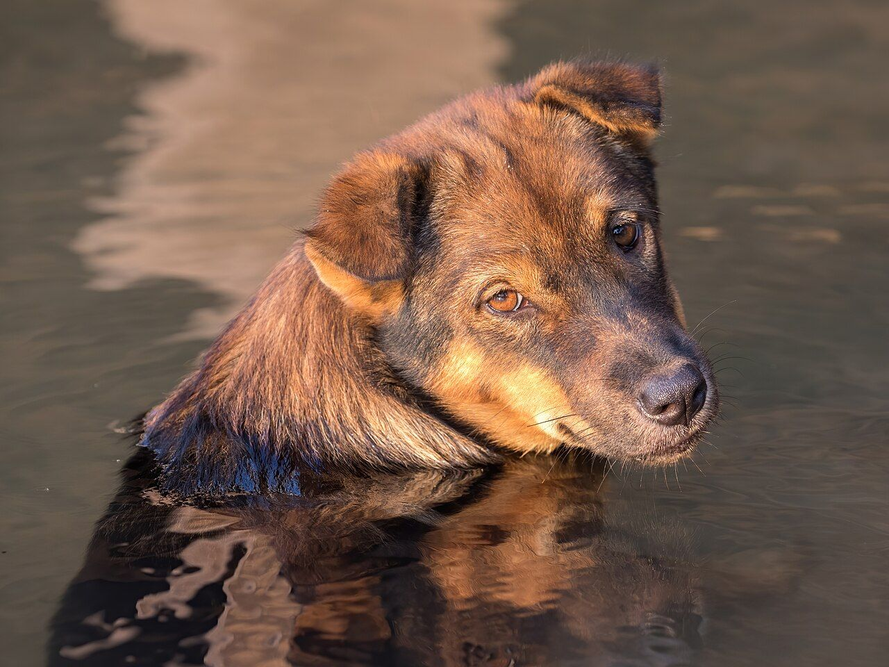
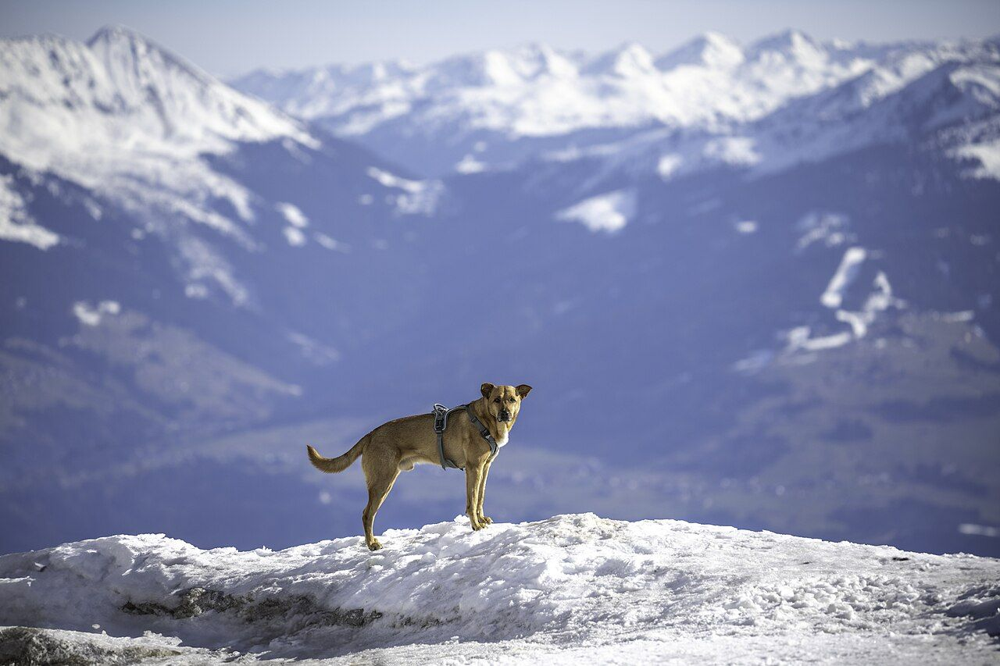
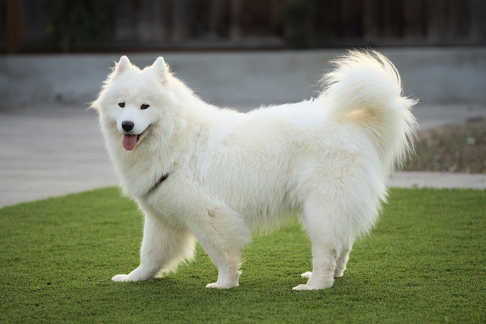

Turn the YouTube videos and playlists you love, and the photos you've taken, into real TV channels. Set them up on your iPhone, then turn on the TV, pick a channel and drop into whatever's playing.
Every channel on a time grid, with what's on now and what's next. Always full, day and night.
No feeds and no deciding every ten minutes. Programmes play back to back on a schedule.
Pick what goes on each channel and how it plays. Your TV updates by itself.
Coming next: channels made from your own photos and videos, looping on the big screen.
Documentaries, interviews, lectures, full concerts and shows: YouTube already has years of great long-form video. Norma turns the playlists and videos you choose into channels that run on their own.
The Fire TV guide's real layout, filled in with example channels.
Norma turns every channel into a continuous schedule, so there's always something playing. Open the guide, see what's on across your channels, and jump in partway through, like cable.
Give it a name and a number, add the YouTube videos and playlists you want, and choose how it plays. Each channel is yours to shape.


Pick photos and videos from your iPhone and Norma turns them into a channel of their own. Set how long each photo stays up, shuffle or keep the order, and let it loop on the TV all day. It's kept private to your account.

Norma Personal TV is in private testing on Amazon Fire TV and iPhone.